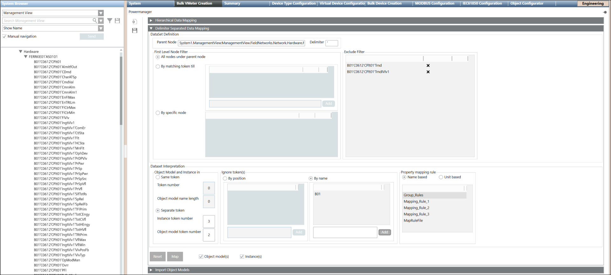
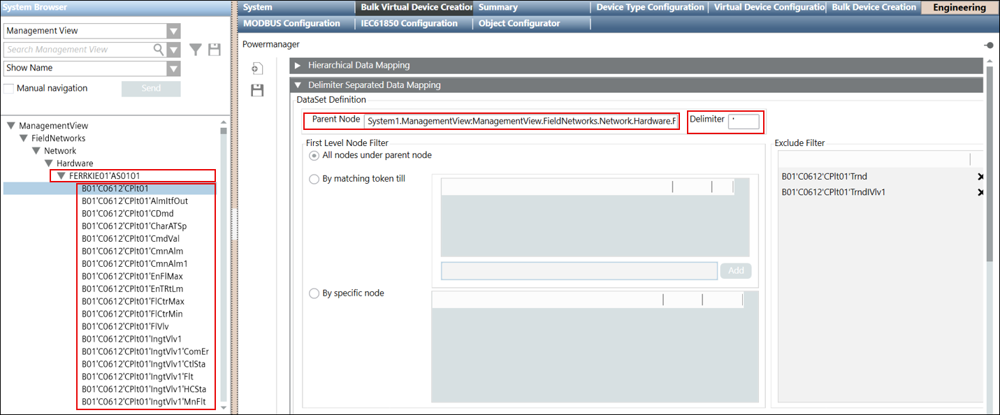
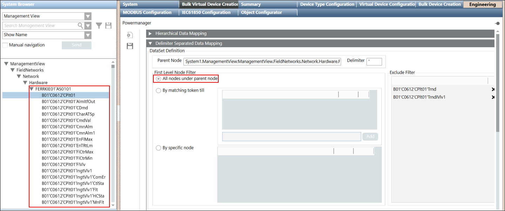
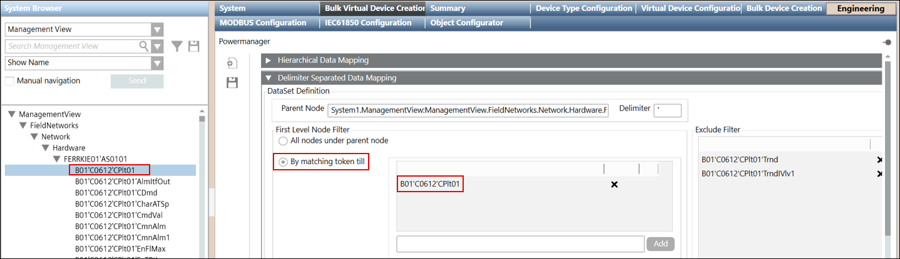
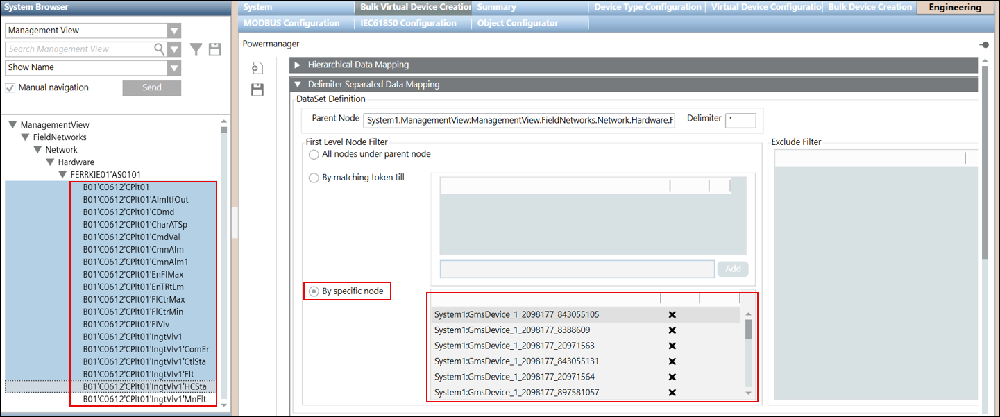
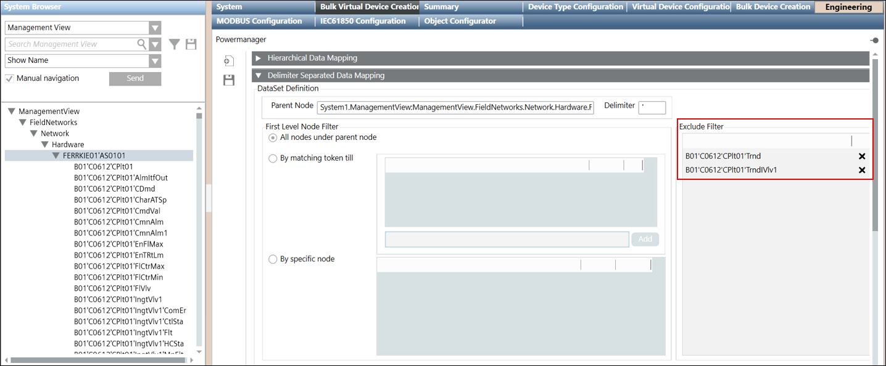
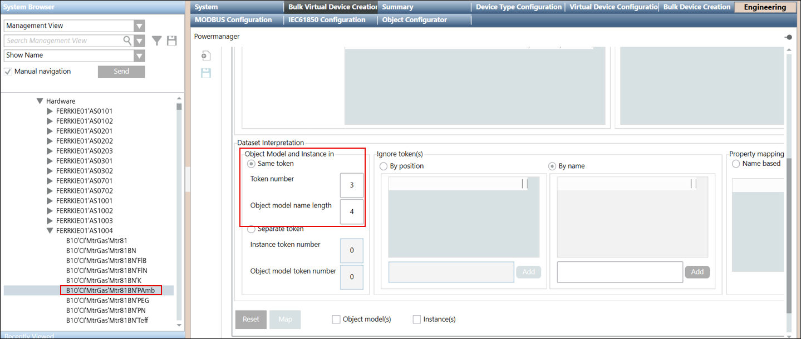
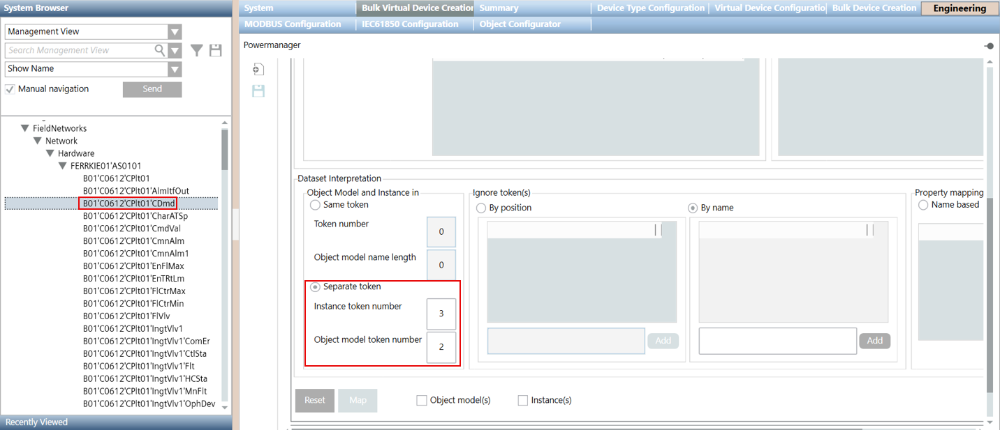
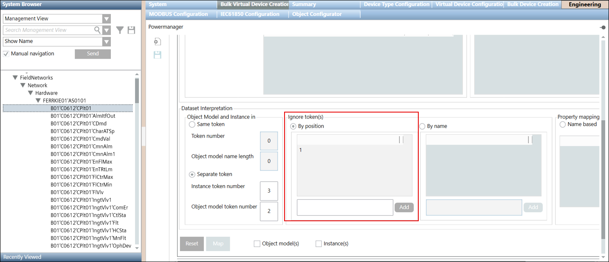
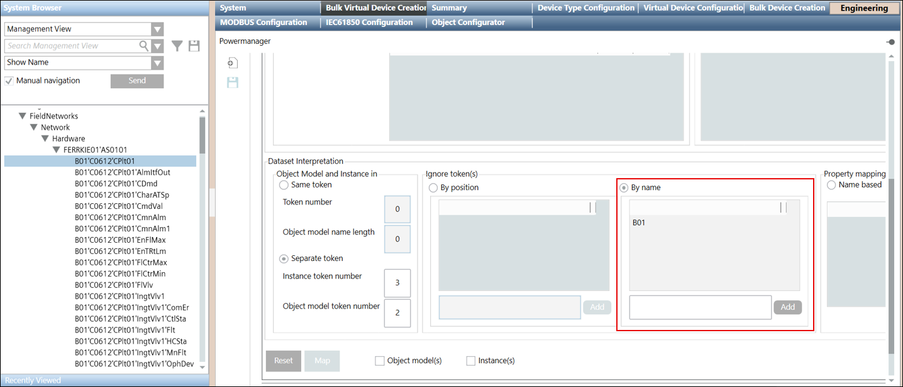

Delimeter Separated Data Mapping Expander
The Delimeter Separated Data Mapping expander provides options to map the System Browser data to Powermanager. In the Delimeter Separated Data Mapping data from the Management View is represented in the form of a flat structure and is separated by delimiters such as ('). The System browser data mapped as object models and instances is saved in a JSON file. This JSON file is then imported in Powermanager and the object model and device instances in the file are mapped as Powermanager devices.

Dataset Definition

- Parent Node- In the Parent Node field, drag-and-drop the complete data string under which the object model or instances are created.
- For example, as shown in the image node FERRKIE01'AS0101 is the parent node under which the object model or instances are created.
- Delimeter- Delimiter is the separator which separates a dataset.
For example, in the B01'C0612'CPIt01 node, (') is the delimiter.
First level node filter
The first level node filter is used to filter data from the selected parent node.
Following are the different types of filter:
All nodes under parent node- All nodes under the selected parent node are included in the dataset. For example, if you have selected FERRKIE01'AS0101 as the parent node, then all nodes below FERRKIE01'AS0101 constitute the dataset.

By matching token till- All nodes matching the specified token are included in the dataset. For example, consider you have added the matching token as B01'C0612'CPIt01, then all the nodes that has the matching token as B01'C0612'CPIt01 are selected and are included in the dataset.

By specific node- With help of this option, you can exclude the specific nodes present in the dataset.
For example, as shown in the image you have selected some nodes that you want to exclude from the dataset, then drag-and-drop all the selected nodes to By specific node field. All the selected nodes are excluded from the dataset.

Exclude Filter
With this, you can exclude the nodes from the dataset available after applying the filter options All nodes under parent node or By matching token till.
For example, you have selected the filter option All nodes under parent node and all the nodes within the dataset are selected. and you want to exclude the nodes such as B01'C0612'CPIt01'Trnd and B01'C0612'CPIt01'Trnd'CDmd then drag-and-drop the B01'C0612'CPIt01'Trnd and B01'C0612'CPIt01'Trnd'CDmd nodes in the Exclude Filter field.

Dataset Interpretation

- Object Model and Instance in Same token-`Provide the Token number. The string (within the node) present at the given token number is selected from which the object model name as well as the instance name is created. The object model name and the instance name are created using the same string. In Object Model name length field, specify the length of the object model name. The object model name will have characters as per the count provided in the Object Model name length field and the instance name will be the complete string.
NOTE: All the strings are separated by a delimeter such as ('). String before each delimeter is considered as a single string. - For example, you have B10'CI'MtrGas'Mtr81BN'PAmb node and you have specified the Token number as 3 and Object Model name length as 4.
- In this scenario, Token number is 3, count 3 strings. Count B10 as string1, CI as the string 2, and third string is MtrGas. Since the Token number is 3, both the object model name and the instance name will be created from the same third string MtrGas. As Object Model name length is 4, the object model name will have 4 characters MtrG and the instance name is the complete string MtrGas.
- Object Model and Instance in Separate token- Enter the Instance Token number from which you can set the name of the instance. In Object model token number field, specify the token number to set the object model name. The object model name and the instance name are created using the two different strings.
- For example, you have B01'C0612'CPlt01'CDmd node and you have specified the Instance token number as 3 and Object model token number as 2.
- In this scenario, as the Instance token number is 3, count 3 strings. Count B01 as string1, C0612 as string 2, and third string is the CPlt01.
Therefore, instance name is CPlt01 and as the Object model token number is 2, the object model name is C0612 as C0612 is the second string of the node.
In this way the object model name and instance name are created from the different strings.

Ignore tokens

- By position- Provide the position of the string that must ignored from the nodes. The string present at the given position is ignored from the nodes.
- For example, consider there are nodes such as B01'C0612'CPlt01 and B01'C0612'CPlt01'AlmtfOut and you want to ignore the string B01 that is present at position 1, then in By position field add position as 1 and from all the nodes string B01 gets ignored.
- By name- Add the name of the string in the By name field. All the nodes that has the string matching with the given name, such strings are ignored from the nodes.
- For example, in the By name add string name as B01. Then string B01 are ignored from the nodes such as B01'C0612'CPlt01 and B01'C0612'CPlt01'AlmtfOut.

Property mapping rule
Select a name or unit based property mapping rule to map the object properties. The property mapping rules are created in the Virtual Device Bulk Import Rules. (See Defining Virtual Devices Bulk Import Rules).
- Name based- Displays a list of name based property mapping rules.
- Unit based- Displays a list of unit based property mapping rules
Object models
Select this box to create an object model with the specified values in the Same token or Separate token fields.
Instances
Select this box to create object instances according to the values specified in the Same token or Separate token fields.
Reset
Resets the values entered in the fields.
Map
Creates a JSON file with the values specified in all the fields of the Delimeter Separated Data Mapping expander.